每套方案包含完整的 4 个页面（对话列表 / AI 对话页 / 设置页 / 空状态），在布局结构、组件形态与玻璃使用密度上有真实差异——不是换肤。所有预览均为高保真方向稿，选定后我们再按该方向打磨细节并进入开发。
看法一：点击下方卡片打开交互式网页预览（可看设计理念/优缺点标注，推荐用 Chrome / Edge 全屏看）；看法二：直接看 screenshots/ 里的 16 张 PNG 单屏大图。
深色沉浸，一切悬浮物皆玻璃。夜间友好、科技感最强，玻璃层次感四种方案里最突出。适合夜间重度用户与极客审美。
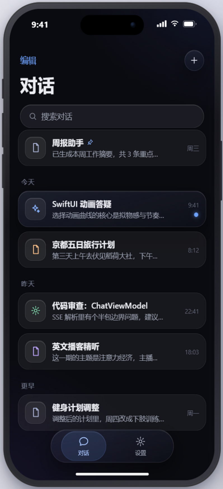
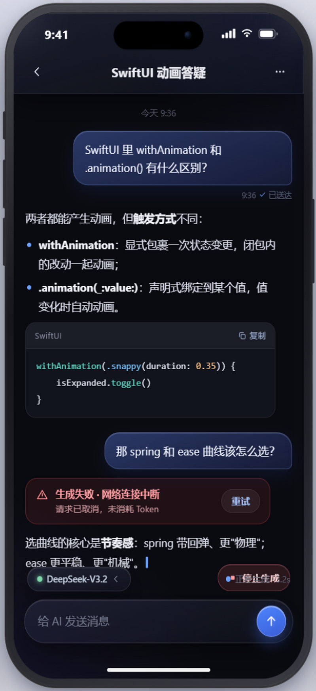
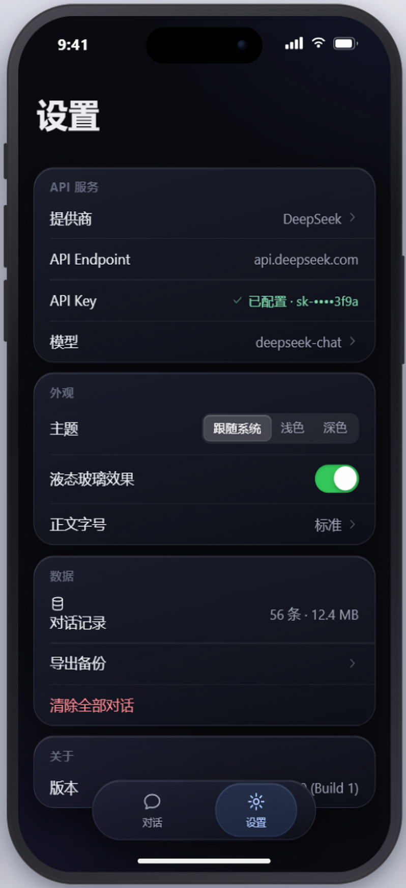
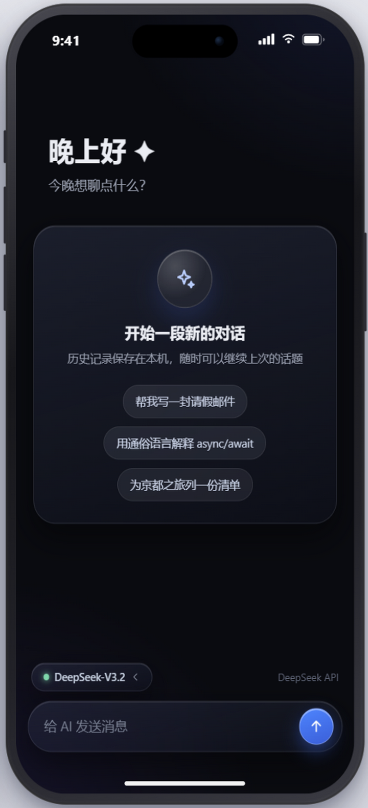
"Apple 自己会怎么做"。完全系统范式：大标题列表、iMessage 气泡、分组设置。开发量最低、性能最稳、长期使用最舒适，辨识度相对弱。
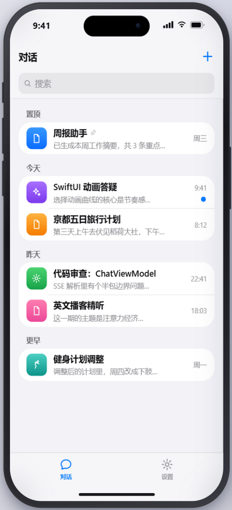
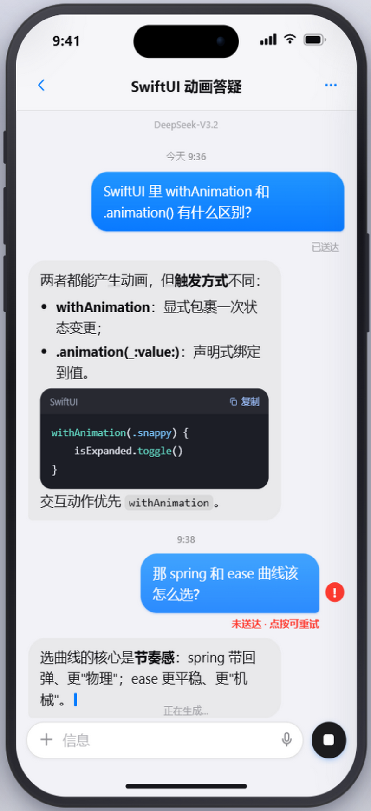
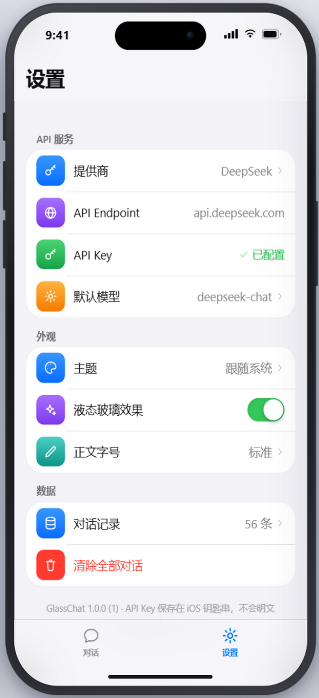
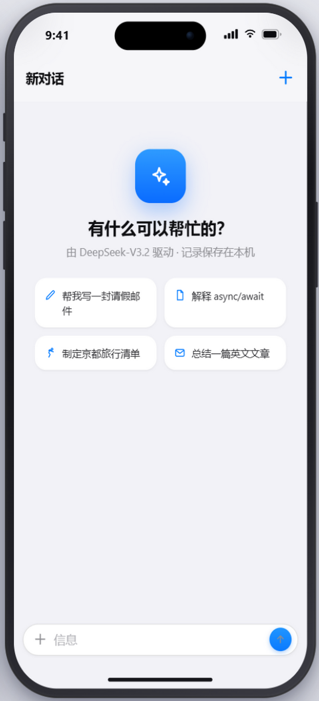
极光渐变背景 + 统一白玻璃 + 中央凸起 FAB。年轻、有记忆点，辨识度最高；需要接受更多视觉调校工作，光晕可整体关闭。
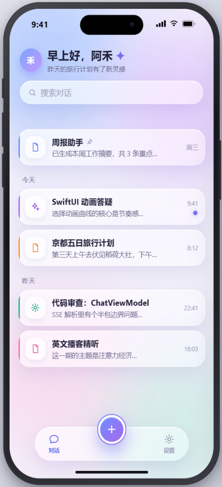
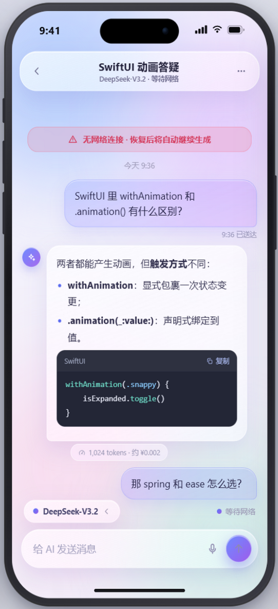
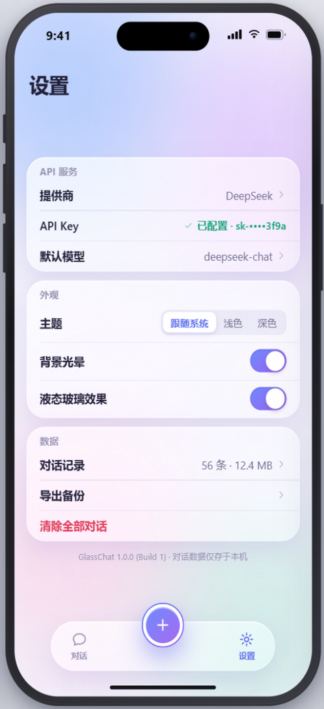
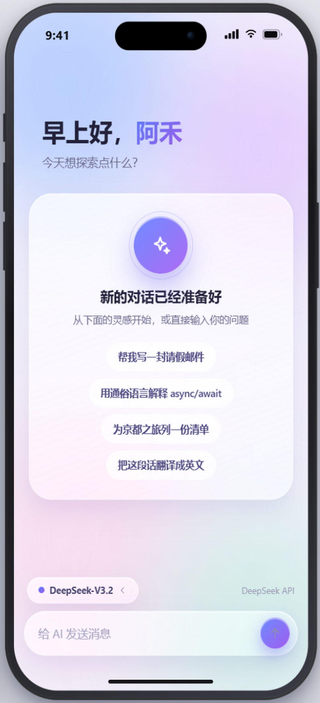
无气泡、无 Tab Bar，AI 回复文档流直排，像阅读器。玻璃只留导航栏与输入栏。阅读体验最佳，气质克制，第一眼冲击力弱。
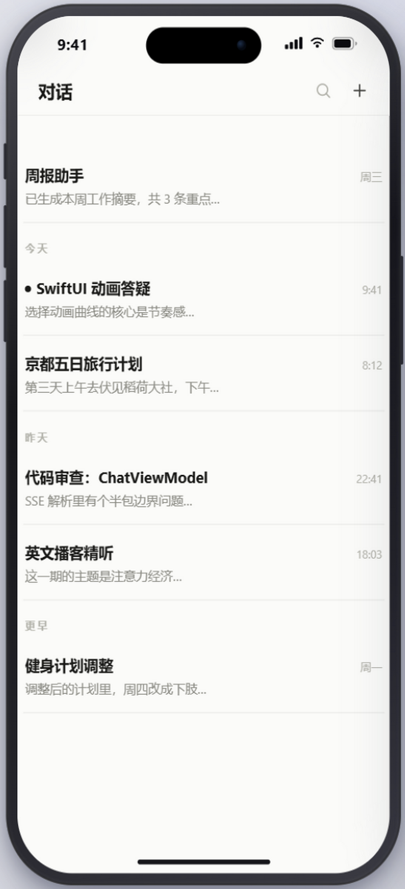
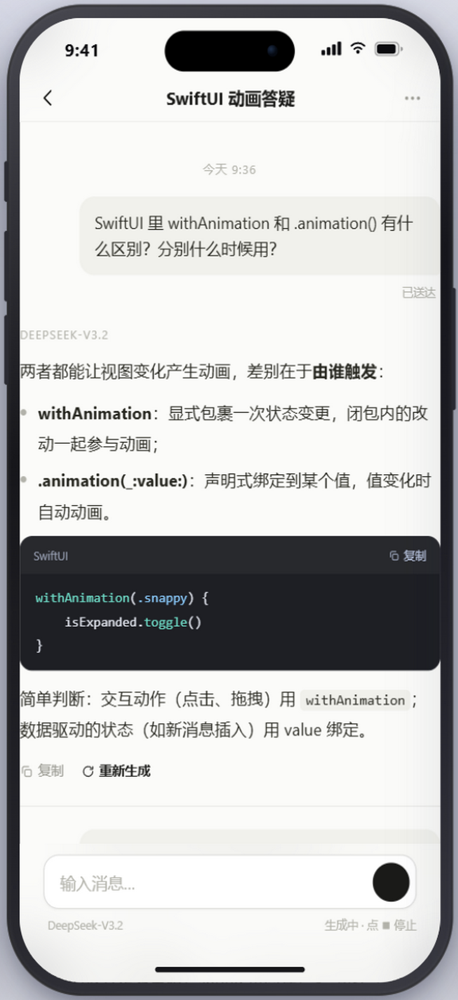
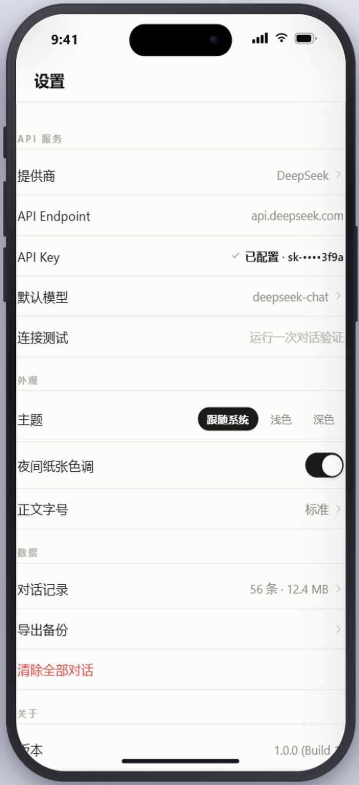
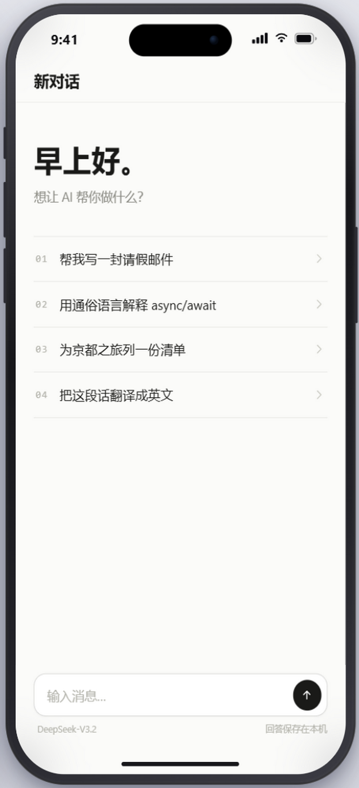
| 维度 | A 曜黑 Glass | B 原生镜面 | C 晨曦 Halo | D 素笺 Minimal |
|---|---|---|---|---|
| 视觉效果 | ★★★★★ 惊艳沉浸 | ★★★★ 精致耐看 | ★★★★★ 有记忆点 | ★★★ 淡雅 |
| 原生 iOS 感 | ★★★☆ | ★★★★★ | ★★★☆ | ★★★★ |
| 开发难度（星少=易） | ★★★ 自定义组件较多 | ★ 全系统组件 | ★★★★ 渐变+玻璃需调校 | ★★ 排版为主 |
| 性能风险 | 低-中（多层 blur） | 最低 | 中（光晕需节制） | 最低 |
| 长时间使用舒适度 | ★★★★ 夜间佳 | ★★★★★ | ★★★☆ | ★★★★★ 阅读最佳 |
| 产品辨识度 | ★★★★ | ★★ | ★★★★★ | ★★★ |
我的推荐首选 B（原生镜面）为基座，吸收 D 的一个特性——设置里提供「气泡 / 直排」显示开关，AI 长回答用 D 式直排更易读。理由：初学者 + 受限开发环境下，B 全部用系统组件搭建，出错面最小、维护最省、最接近 Apple 原生气质。如果你更想要"第一眼惊艳"选 C，主要夜间使用选 A，重度阅读选 D。最终由你决定。
预览为 HTML/CSS 高保真方向稿；实际 SwiftUI 的 Liquid Glass（glassEffect / GlassEffectContainer 实时折射与高光）效果会优于网页模拟。选定方案后进入 Phase 0：设计规范 + 项目骨架 + 云 Mac 构建清单。